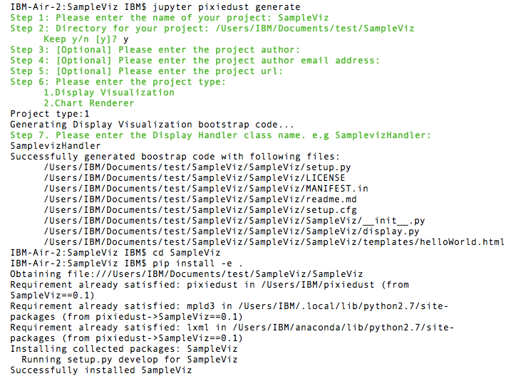
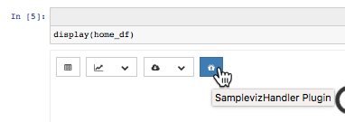

Write a new PixieDust Visualization¶
Create your own visualizations or apps using the PixieDust extensibility APIs. If you know HTML and CSS, you can write and deliver amazing graphics without forcing notebook users to type one line of code. Use the shape of the data to control when PixieDust shows your visualization in a menu.
When a notebook user invokes display(), PixieDust provides a chrome that include a toolbar of menus. Each menu is a way to visualize or perform action on the data.
PixieDust framework builds that menu based on introspecting the data itself and associating it with components that the developer declares can process that data. PixieDust comes with a set of visualizations and actions out-of-the-box, but you can easily add your own custom plugin.
QuickStart¶
To get started fast, try our generator, which lets you create a sample visualization by answering a few prompts in Terminal or other command line app.
- In Terminal or other command-line shell, navigate to the directory where you want to create the new project. This can be anywhere you choose.
- Enter and run:
jupyter pixiedust generate
Respond to the questions/prompts to complete setup. Here’s the entire exchange including the command you’ll run in Step 4:
Install your new visualization.
If you’re not already there, cd into your project directory and run the following command:
pip install -e .Go to your notebook, and restart the kernel.
Run the command
import pixiedustRun the command
import Sampleviz(or whatever you named your project)Then load some data and run the display() command on it.
In the charts dropdown, choose a chart you specified that the renderer can display.
Click the Renderer dropdown.
You see your new visualization menu item! Here’s one named Sampleviz:

Explore the code in your new project directory. We’ve commented in some guidance that should help you understand what you’re looking at.
Code walk-through: Display a DataFrame as a table¶
Here’s a run-down of what goes into a PixieDust visualization:
Data Processing¶
The
TableDisplayclass is defined indisplay/table/display.py. You can see the code on GitHub.class TableDisplay(Display): def doRender(self, handlerId): entity=self.entity if dataFrameMisc.fqName(entity) == "graphframes.graphframe.GraphFrame": if handlerId == "edges": entity=entity.edges else: entity=entity.vertices if dataFrameMisc.isPySparkDataFrame(entity) or dataFrameMisc.isPandasDataFrame(entity): self._addHTMLTemplate('dataframeTable.html', entity=PandasDataFrameAdapter(entity)) return self._addHTML(""" <b>Unable to display object</b> """ )
This class must implement one method, doRender, which is called with a reference to self and a handlerId. In the case of DataFrame display, the handlerId is unused, so you only need to check for one DataFrame entity type. You can display it using a Jinja2 HTML template.
HTML rendering with Jinja2¶
This line of code:
self._addHTMLTemplate('dataframeTable.html', entity=PandasDataFrameAdapter(entity))
is the key to rendering our data. dataframeTable.html (by default found in the templates directory in the same directory as the calling file) is a Jinja2 template consisting of CSS styles, HTML and data processing language. You should study this file carefully here, but the key lines are:
{% set rows = entity.take(100) %}: get the first 100 lines of the DataFrame and assign to variablerows{% for field in entity.getFields() %}: loop over the fields and display each as a<th>{% for row in rows %}: loop over the rows and display each as a<tr>
Also note the <script> tag at the end of the file. This is where you can do some nifty extras like scrolling while keeping the table header in a fixed position and client-side search.
Build your own table display plugin¶
Now that you’ve seen how PixieDust works, let’s build a very simple second table display tool. You’ll need to do 3 things:
1. Add a menu item and hook it to your code 3. Transform the DataFrame into something a web browser can display (HTML in our case, but it could be SVG, a PDF or something more exotic) using Jinja2 HTML templating
DataFrame => HTML¶
Create the file SimpleDisplay.py in the directory display/table, and enter this code:
from ..display import * from pyspark.sql import DataFrame from pixiedust.utils.dataFrameAdapter import * import pixiedust.utils.dataFrameMisc as dataFrameMisc class SimpleDisplay(Display): def doRender(self, handlerId): entity=self.entity if dataFrameMisc.isPySparkDataFrame(entity) or dataFrameMisc.isPandasDataFrame(entity): self._addHTMLTemplate('simpleTable.html', entity=PandasDataFrameAdapter(entity)) return self._addHTML(""" <b>Unable to display object</b> """ )
All you’re really doing here is defining a mechanism to call the right Jinja template – simpleTable.html found in the templates directory – for processing the data. Once you’re working on the template, the sky’s the limit for what you can do. But just to finish out this example, here’s some extremely simple code you can add there:
<table class="table table-striped"> <thead> {%for field in entity.schema.fields%} <th>{{field.name}}</th> {%endfor%} </thead> <tbody> {%for row in entity.take(100)%} <tr> {%for field in entity.schema.fields%} <td>{{row[field.name]}}</td> {%endfor%} </tr> {%endfor%} </tbody> </table>
What you get¶
Now that the code is complete. Let’s update PixieDust in our notebook and see the results. Shut down your Jupyter environment, run the below command from your terminal, and restart Jupyter to get the new code.
pip install --user -e <your directory path to pixiedust code>
You should now see something resembling the screenshot below. The table menu is now a dropdown with two options, DataFrame Table and your new Simple Table. Choosing Simple Table displays the data using the template you defined in simpleTable.html!

Note
PixieDust provides a higher level framework built on top of the display() API that lets you contribute more tightly to the chart menus. When you use the renderer API you contribute to the list renderers that can display a particular type of chart. For example, let notebook users choose Mapbox to display a map. At the lowest level you can create only a visualization and don’t need to specify a renderer. But if you’re interested in learning more, read how to build a renderer.